软件名称：马来西亚留学生汉语练习平台
版本号：V1.0
本文档说明马来西亚留学生汉语练习平台的需求范围、系统结构、功能模块、数据设计、接口设计、部署运行方式、安全权限和测试验证情况。文档内容依据当前可运行代码、数据库脚本、接口行为、真实运行截图和代码推导图示整理，用于软件著作权登记材料中的软件设计说明。
系统面向马来西亚留学生汉语练习场景，提供学生端 H5 学习入口和管理员后台管理入口。学生端覆盖注册登录、三语界面、练习列表、在线答题、成绩记录、错题本和个人中心；管理端覆盖数据看板、学生列表、题库列表、试卷列表和成绩记录列表。后台提供认证、学习练习和管理查询 API，数据库提供题库、试卷、用户、答题、错题和翻译数据存储。
1. 用户认证需求：系统应支持学生注册、学生登录、管理员登录、JWT 登录态保存和个人资料维护，对应前台 Login、Register、Profile 页面和后台 /api/auth 系列接口。 2. 学生练习需求：系统应支持学生查看已发布练习列表、进入练习详情、逐题选择答案、提交答案并查看练习结果，对应 PracticeList、PracticeDetail 页面和 /api/learning/papers 接口。 3. 学习记录需求：系统应保存学生每次提交的题目数量、正确数、错误数、总分、答题时长和提交时间，对应 study_records、user_answers 数据表和 Records 页面。 4. 错题复习需求：系统应在学生答错题目时更新错题本，答对历史错题时标记解决状态，对应 wrong_questions 数据表和 WrongBook 页面。 5. 国际化需求：系统应支持中文、英文、马来语三种界面和题库内容展示，前端静态文案由 i18n 资源维护，题库内容由多语言翻译表提供。 6. 管理端需求：管理员应能查看平台数据统计、学生列表、题库列表、试卷列表和成绩记录，对应 Dashboard、AdminTable 页面和 /api/admin 系列接口。 7. 日志运维需求：后台应记录请求状态、路径、耗时、用户标识和异常信息，支持运行审计和问题排查，对应 logger.js 与 requestLogger.js。
系统应具备清晰的前后端分离结构，前台可以独立构建为静态资源，后台可独立运行在 Node.js 环境中。数据库采用 utf8mb4 字符集以支持中文、英文、马来语和拼音字符。认证令牌、密码、数据库口令和接口地址在文档与日志中应进行脱敏。核心答题提交流程应使用事务保证多表写入一致性。
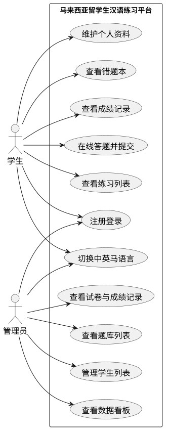
图 3-1 用例图。该图展示学生和管理员两个角色与系统功能的对应关系。学生侧功能围绕学习闭环展开，包括注册登录、练习列表、在线答题、成绩回看、错题复习、个人资料维护和语言切换；管理员侧功能围绕教学管理展开，包括数据看板、学生列表、题库列表、试卷列表和成绩记录。该图用于明确软著材料中的用户边界、业务入口和功能归属，避免将学生功能与管理功能混同。
| 模块 | 角色 | 页面或接口 | 数据对象 |
|---|---|---|---|
| 认证与资料模块 | 学生、管理员 | /login、/register、/profile、/api/auth | users |
| 学习练习模块 | 学生 | /practice、/practice/:id、/api/learning/papers | papers、questions、question_options |
| 成绩记录模块 | 学生、管理员 | /records、/admin/records | study_records、user_answers |
| 错题本模块 | 学生 | /wrong-book、/api/learning/wrong-questions | wrong_questions |
| 题库管理查看模块 | 管理员 | /admin/questions | questions、question_translations |
| 系统统计模块 | 管理员 | /admin、/api/admin/stats | users、questions、papers、study_records |
| 国际化模块 | 学生、管理员 | 顶部语言切换、lang 参数 | level_translations、paper_translations、question_translations |
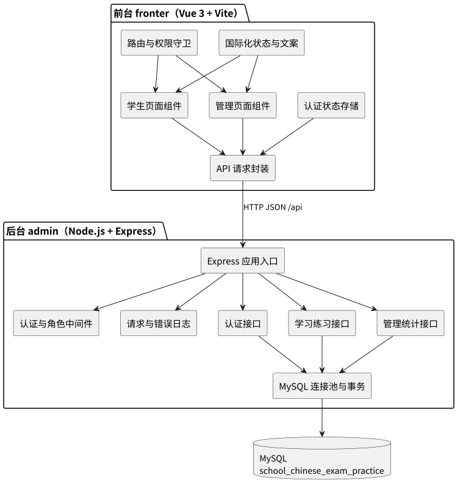
图 4-1 系统架构图。该图说明系统由 fronter 前台、admin 后台和 MySQL 数据库组成。前台负责路由、界面渲染、国际化、登录状态和 API 请求封装；后台负责认证、学习练习、管理查询、日志记录、数据库连接池和事务控制；数据库保存用户、题库、试卷、答题、错题和翻译数据。该图体现了前后端分离、接口解耦和数据集中存储的总体结构。
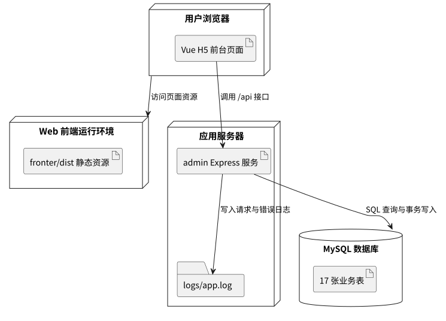
图 4-2 部署图。该图描述浏览器、Web 前端运行环境、应用服务器和 MySQL 数据库之间的部署关系。用户浏览器加载前端静态资源后，通过脱敏后的 /api 地址访问后台接口；后台运行在 Node.js 环境中，通过 MySQL 连接池访问数据库，并将请求和异常写入日志文件。该图用于说明软件运行支撑环境、服务边界和部署节点职责。
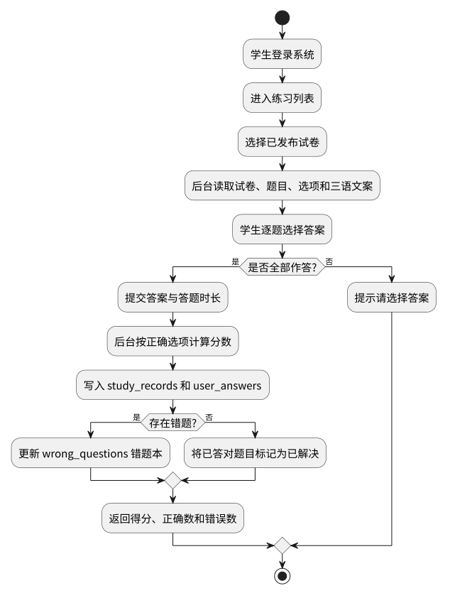
图 5-1 答题流程图。该图说明学生从登录、查看练习列表、选择试卷、逐题作答到提交结果的完整流程。流程中特别体现了未全部作答时的前台提示、提交后的后台判分、学习记录写入、用户答案写入和错题本更新逻辑。该图对应 PracticeDetail 页面和 /api/learning/papers/{id}/submit 接口，是系统学习闭环的关键流程。
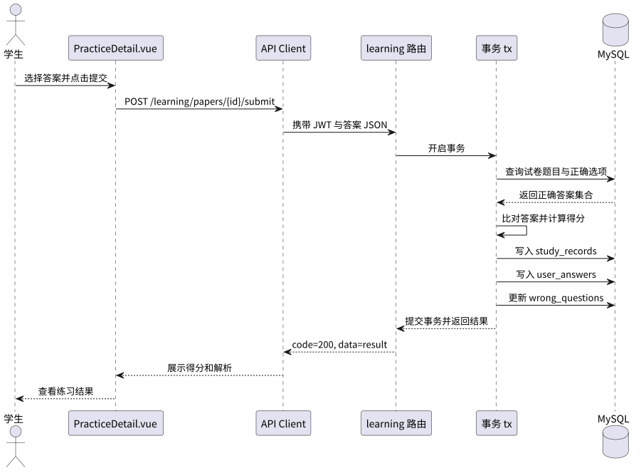
图 5-2 提交答案时序图。该图展示学生页面、API Client、learning 路由、事务封装和 MySQL 之间的调用顺序。后台在事务中查询正确答案、计算得分、写入 study_records、写入 user_answers 并更新 wrong_questions，最后将结果返回给前台展示。该图用于解释多表写入如何保持一致，以及答题结果如何驱动成绩和错题数据更新。
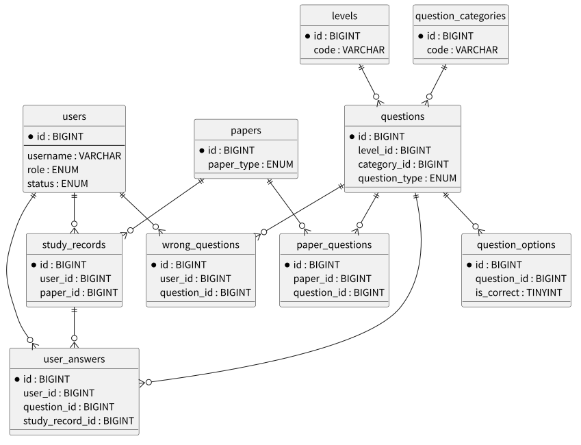
图 6-1 ER 图。该图展示用户、等级、分类、题目、选项、试卷、试卷题目、学习记录、用户答案和错题本之间的核心关联。题目从属于等级和分类，试卷通过 paper_questions 组织题目，学生提交后生成 study_records 和 user_answers，答错题目进入 wrong_questions。该图用于说明系统数据模型如何支撑题库、练习、成绩和错题复习功能。
| 表名 | 主要字段 | 用途说明 |
|---|---|---|
| users | id、username、password、role、language、status | 保存学生和管理员账号、角色、语言偏好和状态 |
| levels | id、code、sort_order、status | 保存 HSK 或校园汉语等级 |
| level_translations | level_id、language_code、name、description | 保存等级多语言名称和说明 |
| question_categories | id、parent_id、code、status | 保存拼音、词汇、语法、阅读等题目分类 |
| question_category_translations | category_id、language_code、name | 保存题目分类多语言信息 |
| questions | id、level_id、category_id、question_type、difficulty、score、status | 保存题目主数据 |
| question_translations | question_id、language_code、title、content、analysis | 保存题干、内容和解析的多语言文本 |
| question_options | question_id、option_key、is_correct、sort_order | 保存选项主数据和正确答案标记 |
| question_option_translations | option_id、language_code、content | 保存选项多语言内容 |
| papers | id、paper_type、level_id、total_score、duration_minutes、status | 保存练习或试卷主数据 |
| paper_questions | paper_id、question_id、sort_order、score | 保存试卷与题目的关联关系 |
| study_records | user_id、paper_id、correct_count、wrong_count、total_score | 保存学生提交记录和成绩 |
| user_answers | user_id、question_id、study_record_id、selected_option_ids、is_correct | 保存学生每题作答明细 |
| wrong_questions | user_id、question_id、wrong_count、resolved | 保存学生错题和复习状态 |
| 接口 | 方法 | 角色 | 功能 |
|---|---|---|---|
| /api/health | GET | 公开 | 健康检查 |
| /api/auth/register | POST | 公开 | 学生注册 |
| /api/auth/login | POST | 公开 | 用户登录并返回 JWT |
| /api/auth/profile | GET/PUT | 登录用户 | 查询和更新个人资料 |
| /api/learning/papers | GET | 公开 | 查询已发布练习列表 |
| /api/learning/papers/:id | GET | 学生 | 查询试卷详情和题目选项 |
| /api/learning/papers/:id/submit | POST | 学生 | 提交答案并生成成绩和错题记录 |
| /api/learning/records | GET | 学生 | 查询个人成绩记录 |
| /api/learning/wrong-questions | GET | 学生 | 查询个人错题本 |
| /api/admin/stats | GET | 管理员 | 查询管理台统计指标 |
| /api/admin/users | GET | 管理员 | 查询学生和用户列表 |
| /api/admin/questions | GET | 管理员 | 查询题库列表 |
| /api/admin/papers | GET | 管理员 | 查询试卷列表 |
| /api/admin/records | GET | 管理员 | 查询全量成绩记录 |
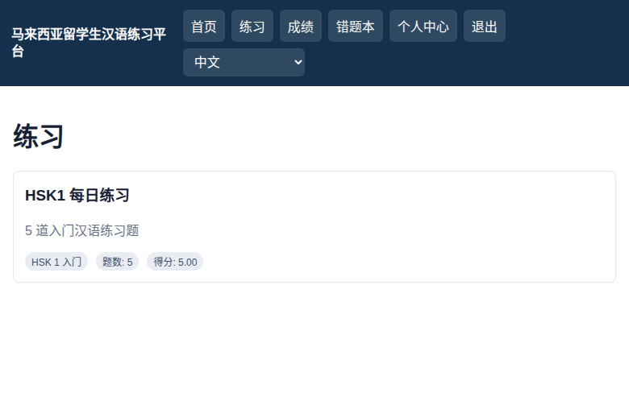
图 8-1 中文练习列表页面截图，访问路径为 /practice。页面展示学生登录后的练习入口，包括顶部导航、语言切换控件、练习标题、练习说明、等级名称、题目数量和试卷总分等内容。该截图用于证明系统能够从后台 MySQL 题库读取已发布试卷，并在前台以中文界面呈现练习资源，体现学生端核心学习入口和国际化界面能力。
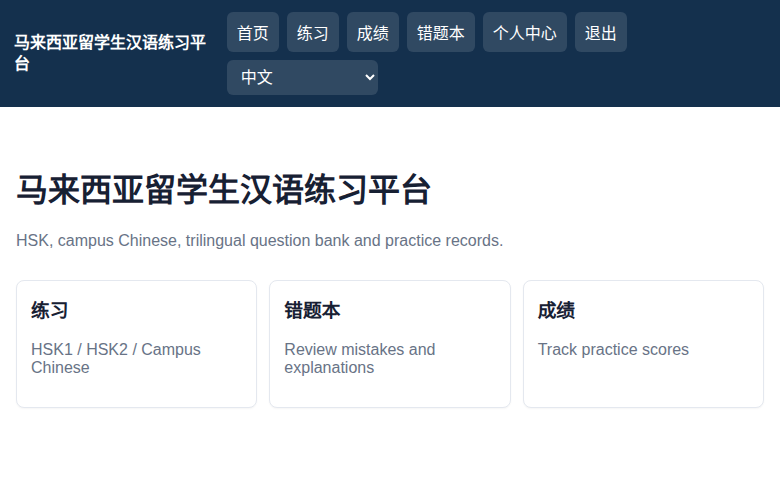
图 8-2 中文首页截图，访问路径为 /。页面展示系统名称、练习入口、错题本入口和成绩入口，顶部导航根据当前学生登录状态展示练习、成绩、错题本、个人中心及退出按钮。该截图用于说明平台首页作为学生端主导航页，能够将练习、错题复习和学习成绩三个主要学习场景集中呈现，形成清晰的学习闭环入口。
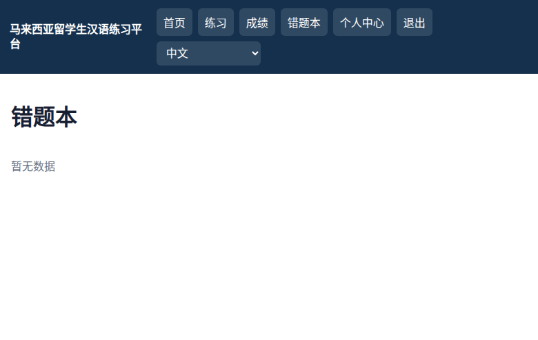
图 8-3 中文错题本页面截图，访问路径为 /wrong-book。页面展示错题本标题和当前错题数据状态，顶部导航仍保留学生常用功能入口。该截图用于说明系统具备错题归集和复习入口，后台在答题提交时会依据答题结果更新 wrong_questions 数据表，页面负责向学生展示待复习题目、错误次数和解析信息。
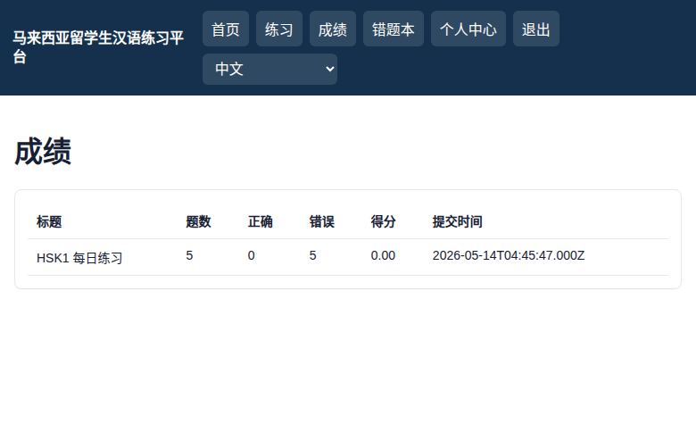
图 8-4 中文成绩记录页面截图，访问路径为 /records。页面以表格方式展示练习标题、题目数量、正确数、错误数、得分和提交时间。该截图用于证明系统能够记录学生答题行为，并从 study_records 表读取个人历史成绩，支持学习过程追踪、成绩回看和练习效果评估。
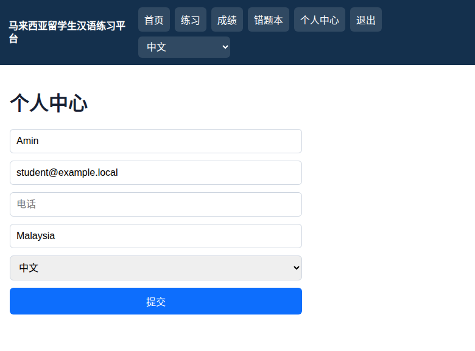
图 8-5 中文个人中心页面截图，访问路径为 /profile。页面展示姓名、邮箱、电话、国籍、语言等个人资料表单，并提供提交保存入口。该截图用于说明系统支持学生资料维护和语言偏好设置，前端表单与 /api/auth/profile 接口关联，后台按当前登录用户更新 users 表中的个人字段。
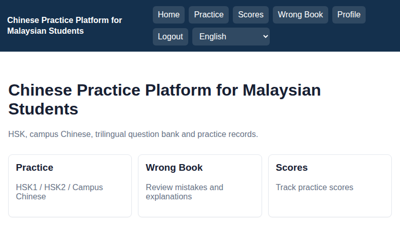
图 8-6 英文首页截图，访问路径为 /，通过顶部语言下拉框切换到 English 后采集。页面标题、导航和入口卡片均切换为英文文案。该截图用于说明系统具备前端国际化能力，静态导航文案来自前端 i18n 资源，学习数据则可通过接口 lang 参数读取数据库中的多语言翻译字段。
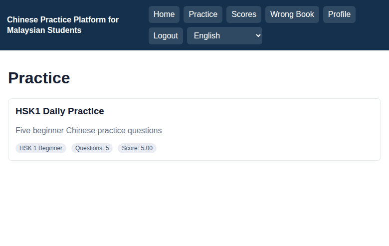
图 8-7 英文练习列表页面截图，访问路径为 /practice，语言为 English。页面中的练习标题、说明、等级和字段标签以英文展示。该截图用于展示练习数据的多语言输出能力，说明前端语言状态会影响接口查询参数，后台按 language_code 从试卷、等级、题目分类等翻译表中读取对应语言内容。
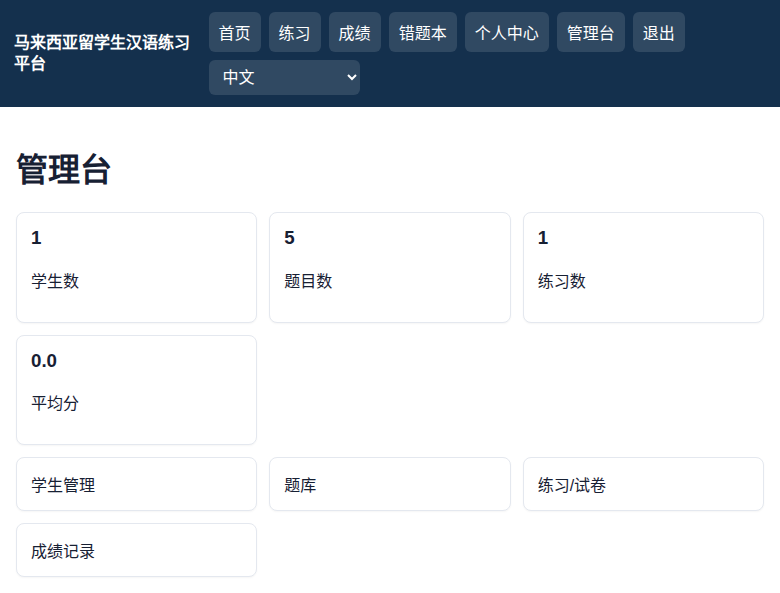
图 8-8 中文管理台数据看板截图，访问路径为 /admin。页面展示学生数、题目数、练习数、平均分等统计指标，并提供学生管理、题库、练习试卷和成绩记录入口。该截图用于证明管理员角色登录后可以访问后台管理功能，系统通过 JWT 与角色守卫限制管理页面和管理接口。
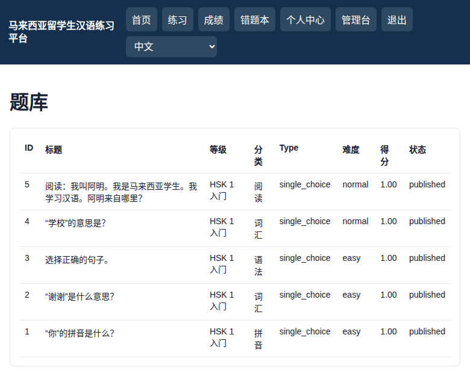
图 8-9 中文题库管理列表截图，访问路径为 /admin/questions。页面以表格展示题目 ID、标题、等级、分类、题型、难度、分值和状态。该截图用于说明管理端可以查看题库资源和三语题目数据，为后续题库维护、练习编排和教学管理提供数据基础。
后台目录为 admin，可通过 npm run db:init 初始化数据库和演示题库，通过 npm run seed:users 写入演示用户，通过 npm run dev 或 npm start 启动 Express 服务。前台目录为 fronter，可通过 npm run dev 启动开发服务，通过 npm run build 构建生产静态资源。前台默认 API 地址已在文档中脱敏，实际部署可通过 VITE_API_BASE 配置。数据库连接信息通过环境变量覆盖，文档和日志不保留真实敏感值。
系统使用 bcryptjs 对密码进行哈希存储，登录成功后使用 JWT 生成 7 天有效令牌。前端路由守卫根据本地登录态限制学生页面和管理员页面访问，后台 auth 中间件验证令牌，role 中间件限制管理员接口。日志模块会对 authorization、password、token 等字段做脱敏，避免运行日志直接暴露敏感认证信息。
系统提供 schema.sql、seed.sql、initDb.js 和 seedUsers.js。schema.sql 创建数据库和 17 张业务表，seed.sql 写入等级、分类、试卷、题目、选项及三语翻译数据，initDb.js 顺序执行建表和演示题库脚本，seedUsers.js 写入管理员和学生演示账号。后台日志默认写入 admin/logs/app.log，可通过 LOG_DIR 改写日志目录。
本次核验已执行数据库初始化、种子账号写入、前端生产构建、数据库结构查询、接口 smoke test 和浏览器真实页面截图。数据库核验结果为 17 张表全部存在、23 个外键存在、试卷题目无孤儿关联、题目翻译覆盖中文、英文和马来语。接口 smoke test 覆盖健康检查、学生登录、练习列表、试卷详情、答题提交、成绩记录、管理员登录、管理统计和用户列表。前端构建通过 Vite 完成，浏览器截图验证学生端和管理端页面可真实访问。
马来西亚留学生汉语练习平台已具备学生端汉语练习、三语展示、在线答题、成绩记录、错题复习、个人资料维护和管理员数据查看等核心功能。系统结构清晰，数据库表关系完整，接口能够支撑主要业务流程，日志模块已接入后台请求和错误处理链路，可作为软件著作权登记的软件设计说明材料。